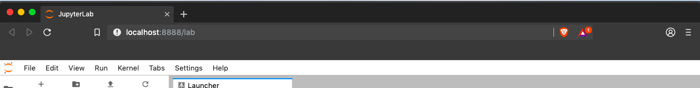
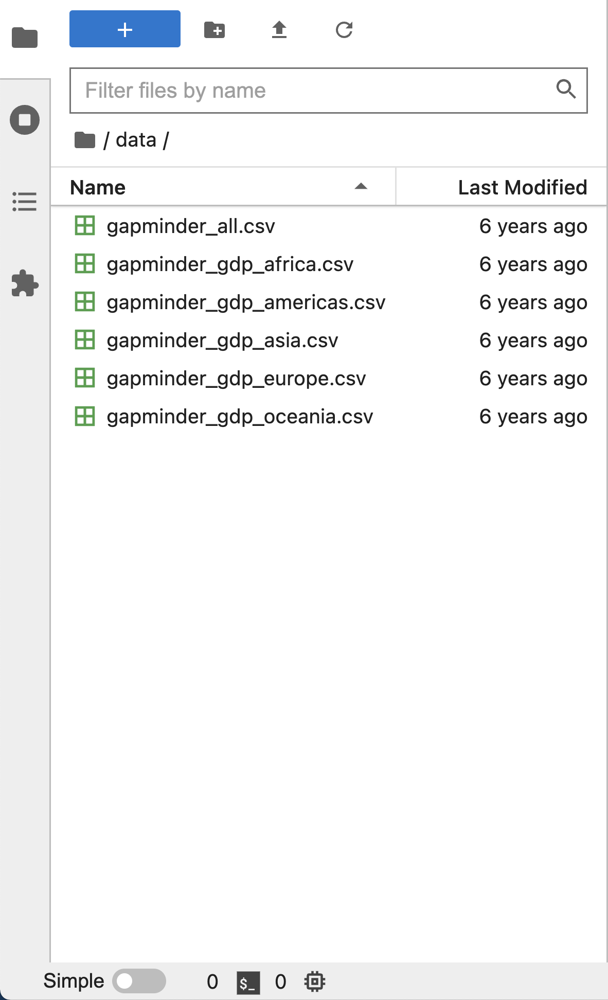
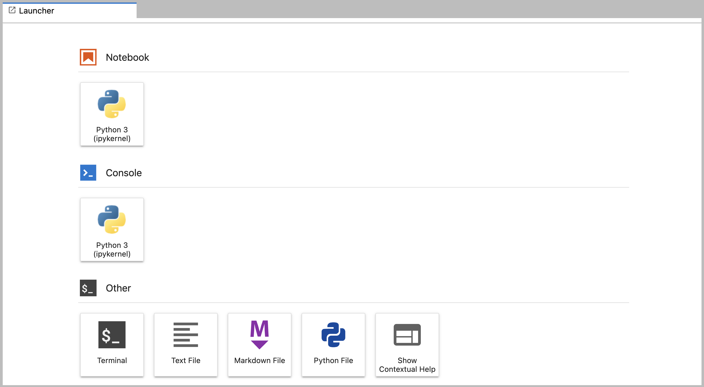
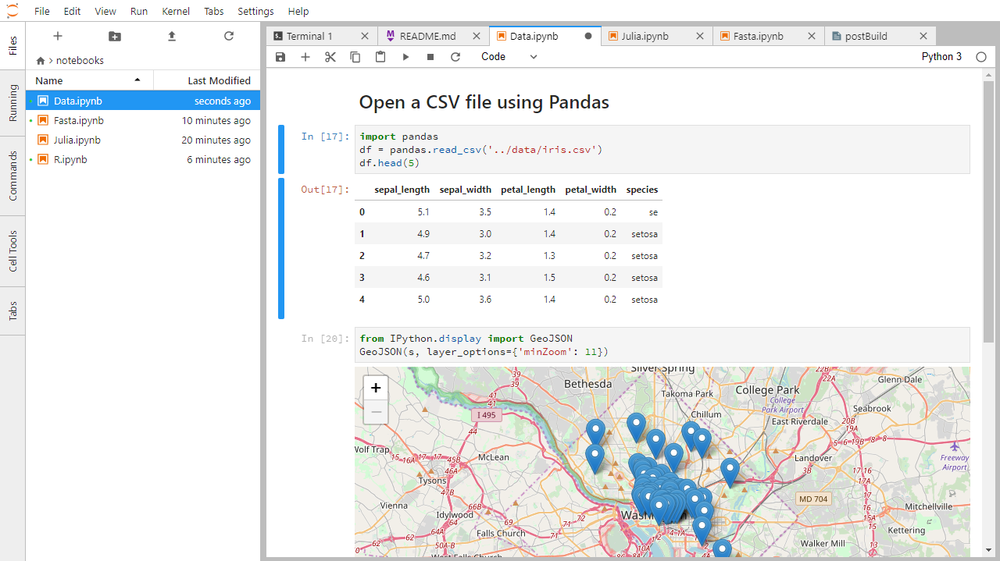
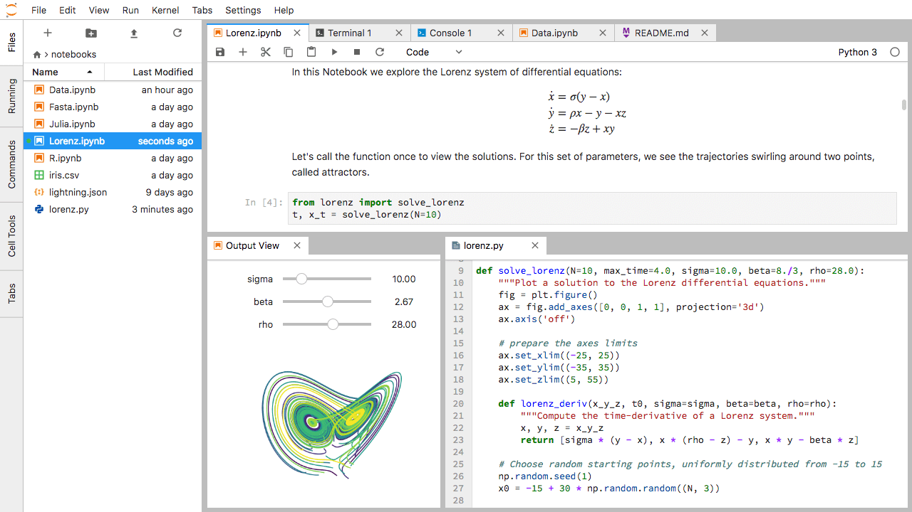
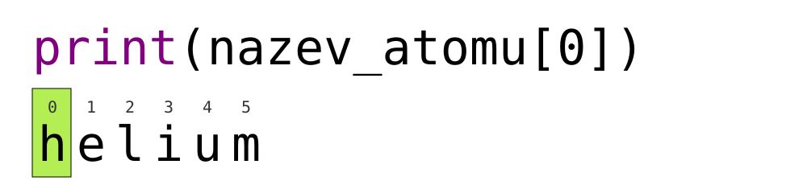

Celá lekce na jedné stránce
Content from Spuštění a ukončení
Naposledy upraveno 2026-10-12 | Upravit tuto stránku
Přehled
Otázky
- Jak se spouští program v Pythonu?
Cíle
- Spustit server JupyterLab.
- Vytvořit nový skript v Pythonu.
- Vytvořit Jupyter notebook.
- Vypnout server JupyterLab.
- Vysvětlit, čím se liší skript v Pythonu od Jupyter notebooku.
- Psát v notebooku text v Markdownu.
- Psát a spouštět v notebooku kód v Pythonu.
Python budeme v celém kurzu spouštět v Jupyter noteboocích v prostředí JupyterLab. Notebooky se hodně používají v datové vědě a při práci s grafy. Kód v nich spouštíte po kouscích, výsledek vidíte hned pod ním a celý notebook pak můžete snadno poslat dál.
Kód se samozřejmě dá psát i jinde. Programátoři často pracují ve vývojovém prostředí (IDE, integrated development environment), jako je PyCharm nebo Visual Studio Code, nebo v textových editorech typu Vim či Emacs. Program v nich napíšou, uloží a pak ho spustí buď přímo v editoru, nebo v příkazové řádce. V notebooku je to kratší cesta: napíšete kód, spustíte ho a výsledek máte hned před očima.
JupyterLab toho umí víc:
- Kód v něm pohodlně píšete, upravujete, kopírujete a vkládáte.
- Když začnete psát název a zmáčknete Tab, JupyterLab ho doplní (tab completion) a ukáže vám, co máte k dispozici.
- Ke kódu můžete připsat poznámky s odkazy, nadpisy nebo odrážkami, aby se v něm vyznali kolegové i vy sami za pár měsíců.
- Grafy a obrázky se zobrazují hned pod kódem, který je vytvořil, takže máte celou analýzu pohromadě.
Notebook se skládá z buněk (cells). V buňce může být kód, text nebo obrázek.
Začínáme s JupyterLabem
JupyterLab je aplikace z projektu Jupyter, která běží jako server a ovládá se přes webový prohlížeč. Můžete v ní mít vedle sebe notebooky, textové editory, terminály a další nástroje. Stačí vám k tomu rozumně aktuální prohlížeč, nejlépe Chrome, Safari nebo Firefox.
JupyterLab je součástí distribuce Anaconda. Pokud ji ještě nemáte, podívejte se do pokynů k instalaci.
V lekci budeme JupyterLab spouštět na vlastním počítači, takže internet potřebujete jen na stažení a instalaci. Funguje to takhle:
- Na počítači spustíte server JupyterLab.
- V prohlížeči se otevře adresa začínající na
localhost, přes kterou se k serveru připojíte. - Kód napíšete do prohlížeče, server ho spustí a prohlížeč vám ukáže výsledek.
JupyterLab? A co Jupyter notebooky?
JupyterLab je nástupcem klasického Jupyter Notebooku. Pokud jste už s notebooky pracovali, bude vám JupyterLab povědomý.
Kdo chce znát podrobnosti o rozdílech mezi oběma rozhraními, najde je v dokumentaci k rozhraní JupyterLabu (anglicky).
Spuštění JupyterLabu
JupyterLab spustíte z příkazové řádky. Na Macu k tomu poslouží Terminál, ve Windows Anaconda Prompt.
Rozhraní JupyterLabu
JupyterLab umí spoustu věcí jako běžná vývojová prostředí (IDE), ale je stavěný hlavně na interaktivní práci, při které s kódem a daty zkoušíte, co funguje.
Rozhraní JupyterLabu má tři hlavní části: nahoře Menu Bar (panel nabídek), vlevo sklopitelný Left Side Bar (levý postranní panel) a uprostřed Main Work Area (hlavní pracovní plocha) s kartami otevřených dokumentů a nástrojů.
Názvy nabídek a tlačítek necháváme v angličtině, protože přesně tak je v JupyterLabu uvidíte.
Menu Bar (panel nabídek)
V horní liště jsou hlavní nabídky. U většiny akcí najdete i klávesovou zkratku. Ve výchozím nastavení tu jsou tyto nabídky:
- File (soubor): práce se soubory a složkami – New, Open, Close, Save a další. Je tu i Shut Down, kterým JupyterLab vypnete.
- Edit (úpravy): Undo, Cut, Copy, Paste a další úpravy.
- View (zobrazení): mění vzhled JupyterLabu.
- Run (spuštění): spouštění kódu v noteboocích a konzolích.
- Kernel (jádro): správa kernelů. Co kernel je, vysvětlujeme o kousek níž.
- Tabs (karty): seznam otevřených dokumentů a nástrojů.
- Settings (nastavení): běžná nastavení JupyterLabu. Kdo chce víc, najde tu i Advanced Settings Editor.
- Help (nápověda): odkazy na nápovědu k JupyterLabu a ke kernelům.
Kernel (jádro)
Dokumentace JupyterLabu popisuje kernely jako „samostatné procesy spuštěné serverem, které spouštějí váš kód v různých programovacích jazycích a prostředích“. Jakmile otevřete notebook, spustí se kernel, tedy proces, který bude váš kód provádět. My budeme používat kernel ipython, který spouští Python 3.
Existují i kernely pro jiné jazyky, takže ve stejném JupyterLabu můžete psát třeba v R, Javě, Julii, Ruby, JavaScriptu nebo Fortranu.
Takhle vypadá výchozí Menu Bar:

Left Sidebar (levý postranní panel)
V levém postranním panelu najdete několik často používaných karet: prohlížeč souborů (ukazuje obsah složky, ve které jste JupyterLab spustili), seznam běžících kernelů a terminálů, paletu příkazů (command palette) a seznam otevřených karet.

Panel schováte a zase zobrazíte v nabídce View volbou „Show Left Sidebar“, nebo kliknutím na kartu, která je v panelu právě otevřená.
Main Work Area (hlavní pracovní plocha)
Na hlavní pracovní ploše si můžete dokumenty (notebooky, textové soubory…) a nástroje (terminály, konzole…) rozložit do panelů s kartami. Panely jde zvětšovat, zmenšovat i dál dělit.
Pokud nevidíte kartu Launcher (spouštěč), klikněte na modré tlačítko + pod nabídkami File a Edit.

Kartu do jiného panelu přesunete tak, že ji přetáhnete doprostřed toho panelu. Když ji přetáhnete k jeho okraji (vlevo, vpravo, nahoru nebo dolů), panel se rozdělí. Karta, se kterou právě pracujete, má nahoře barevný proužek (obvykle modrý).
Vytvoření skriptu v Pythonu
- Na kartě Launcher klikněte v části Other na ikonu
Text File.
- Nový textový soubor vytvoříte i přes File -> New -> Text File.
- Aby z něj byl program v Pythonu, uložte ho přes File -> Save
File As pod názvem, který končí na
.py.- Přípona
.pydává všem (i operačnímu systému) najevo, že jde o program v Pythonu. - Je to zvyklost, ne povinnost.
- Přípona
Vytvoření Jupyter notebooku
Nový notebook otevřete na kartě Launcher kliknutím na ikonu Python 3 v části Notebook, nebo přes File -> New -> Notebook.
Pár dalších poznámek:
- Notebooky mají příponu
.ipynb, aby se nepletly s obyčejnými programy v Pythonu. - Notebook můžete vyexportovat jako skript v Pythonu a ten pak spouštět z příkazové řádky.
Takhle vypadá notebook otevřený v JupyterLabu. Podrobnosti najdete v oficiální dokumentaci k notebookům (anglicky).

Jak se notebook ukládá
- Notebook se ukládá ve formátu JSON.
- Stejně jako u webové stránky vypadá uložený soubor jinak než to, co vidíte v prohlížeči.
- Právě díky tomu ale může Jupyter v jednom souboru držet kód, text i obrázky.
Rozložení dokumentů do panelů
Na hlavní pracovní ploše si můžete dokumenty rozložit do panelů s kartami. Tady je příklad z oficiální dokumentace:

Nejdřív otevřete textový soubor, konzoli Pythonu (Python console) a terminál a rozložte je do tří panelů. Pak totéž zkuste s notebookem, terminálem a textovým souborem. Nakonec si poskládejte vlastní rozložení. Jaké by se vám při práci hodilo nejvíc?
Když máte karty otevřené, přetáhněte jednu z nich doprostřed jiného panelu – tím ji do něj přesunete. Panel rozdělíte tak, že kartu přetáhnete k jeho okraji.
Kód vs. text
Jupyter míchá kód a text v různých blocích, kterým se říká buňky (cells). „Kódem“ obvykle myslíme zdrojový kód programu napsaný v jazyce, jako je Python. Buňka s kódem (code cell) tedy obsahuje program a textová buňka (text cell) obyčejný text pro lidi.
Notebook má dva režimy: Command a Edit
- Zkuste střídavě mačkat Esc a Enter. Okraj buňky se bude měnit ze šedé na modrou a zpátky.
- To jsou dva režimy notebooku: Command mode (příkazový režim, šedý okraj) a Edit mode (režim úprav, modrý okraj).
- V režimu Command pracujete s buňkami jako s celky, v režimu Edit píšete dovnitř buňky.
- V režimu Command (Esc, šedý okraj) fungují tyto klávesy:
- b přidá novou buňku pod aktuální buňku,
- a přidá novou buňku nad ni,
- x aktuální buňku smaže,
- z vrátí poslední operaci s buňkou (smazání, přidání a podobně).
- Všechno najdete i v nabídkách, ale se zkratkami budete mnohem rychlejší.
Command vs. Edit
V jakém režimu je teď váš notebook – Command, nebo Edit? Přepněte se do druhého režimu a zase zpátky. Zkratkou přidejte novou buňku. Zkratkou ji smažte. Zkratkou vraťte poslední operaci s buňkou.
Režim Command má šedý okraj, režim Edit modrý. Mezi nimi přepínáte klávesami Esc a Enter.
Všechny tři zkratky fungují jen v režimu Command (pokud je okraj modrý, stiskněte nejdřív Esc):
- novou buňku přidáte klávesou b nebo a,
- smažete ji klávesou x,
- poslední operaci vrátíte klávesou z.
Buňky vybírejte a upravujte klávesnicí a myší
- Klávesou Enter se přepnete do režimu Edit (okraj zmodrá) a můžete do buňky psát.
- Do jedné buňky často píšeme víc řádků kódu, proto Enter v režimu Edit jen odřádkuje, stejně jako v textovém editoru.
- Buňku spustíte zkratkou Shift+Enter.
- Na pravé straně klávesnice jsou Enter a Shift hned vedle sebe, takže to zvládnete jednou rukou.
Notebook převede Markdown na pěkně formátovaný text
- Notebook umí zobrazit i Markdown.
- Markdown je jednoduchý textový formát, ve kterém píšete seznamy, odkazy a další věci, které znáte z webových stránek.
- Dá se brát i jako zjednodušené HTML, které vypadá jako text ze staromódního e-mailu.
- Buňku změníte na buňku s Markdownem (Markdown cell) tak, že v režimu Command (Esc, šedý okraj) zmáčknete klávesu M.
- Zmizí
In [ ]:– podle toho poznáte, že už to není buňka s kódem – a můžete psát v Markdownu. - Zpátky na buňku s kódem (Code cell) ji přepnete v režimu Command klávesou y.
Markdown umí většinu toho, co HTML
| Napíšete | Uvidíte |
|---|---|
|
|
|
|
|
|
|
Nadpis 1. úrovně |
|
Nadpis 2. úrovně (atd.) |
|
Na zalomení řádků nezáleží. Prázdný řádek ale začne nový odstavec. |
|
Odkazy se píšou jako
|
Seznamy v Markdownu
V buňce s Markdownem vytvořte tenhle vnořený seznam:
- Sehnat peníze.
- Udělat práci.
- Navrhnout experiment.
- Nasbírat data.
- Vyhodnotit je.
- Sepsat výsledky.
- Publikovat.
Z kódu na Markdown
Co se stane, když do buňky s kódem napíšete kód v Pythonu a pak buňku přepnete na Markdown? Napište do buňky s kódem třeba tohle:
Spusťte ji (Shift+Enter) a ověřte si, že funguje. Pak se do ní vraťte, zmáčkněte Esc a potom m, tím ji přepnete na Markdown, a znovu ji „spusťte“ přes Shift+Enter. Co se stalo? K čemu by se to mohlo hodit?
Rovnice
Běžný Markdown (třeba ten, ve kterém jsou napsané tyhle materiály) rovnice nezobrazí, notebook ale ano. Vytvořte novou buňku s Markdownem a napište do ní:
(Asi bude jednodušší text zkopírovat.) Co se zobrazí? Co podle vás
dělá podtržítko _, stříška ^ a dolar
$?
Notebook rovnici vysází podobně jako LaTeX. Dolary $
říkají Markdownu, že text mezi nimi je rovnice v LaTeXu. Pokud LaTeX
neznáte: podtržítko _ dělá dolní index a stříška
^ horní index. Složené závorky { a
} seskupují text, takže dolním indexem je celé
i=1 a horním N. Ze stejného důvodu je ve
složených závorkách i -i, aby se celé stalo horním indexem
čísla 2. \sum a \approx jsou
příkazy LaTeXu pro symboly „součet“ a „přibližně rovno“.
Vypnutí JupyterLabu
- V nabídce File zvolte úplně dole Shut Down. JupyterLab se zeptá, jestli ho opravdu chcete vypnout (nezapomeňte si předtím uložit práci!). Potvrďte to tlačítkem Shut Down.
- Když ho budete chtít spustit znovu, napište do příkazové řádky opět:
Vypnutí JupyterLabu
Vyzkoušejte si JupyterLab vypnout a znovu zapnout.
- Skripty v Pythonu jsou obyčejné textové soubory.
- Kód v Pythonu budeme psát a spouštět v Jupyter notebooku.
- Notebook má dva režimy: Command a Edit.
- Buňky vybíráte a upravujete klávesnicí i myší.
- Notebook převede Markdown na pěkně formátovaný text.
- Markdown umí většinu toho, co HTML.
Content from Proměnné a přiřazení
Naposledy upraveno 2026-10-12 | Upravit tuto stránku
Přehled
Otázky
- Jak si program zapamatuje data?
Cíle
- Psát programy, které ukládají jednoduché hodnoty do proměnných a počítají s nimi.
- Umět sledovat, jak se hodnoty proměnných v programu mění.
Hodnoty ukládejte do proměnných
Proměnná (variable) je název pro nějakou hodnotu.
-
Pro názvy proměnných platí několik pravidel:
- smí obsahovat jen písmena, číslice a podtržítko
_(to se hodí k oddělení slov v delších názvech), - nesmí začínat číslicí,
-
záleží v nich na velikosti písmen, takže
vek,VekaVEKjsou tři různé proměnné.
- smí obsahovat jen písmena, číslice a podtržítko
Python 3 sice v názvech povolí i česká písmena s diakritikou (třeba
věk), ale v praxi se skoro vždy píšou bez ní. Budeme to tak dělat i my.Název by měl dávat smysl, aby vy i ostatní věděli, co v proměnné je.
Názvy, které začínají podtržítky (třeba
__skutecny_vek_alistaira), mají v Pythonu zvláštní význam. Dokud nebudete vědět jaký, raději se jim vyhněte.Znaménko
=uloží hodnotu napravo pod název nalevo. Říká se tomu přiřazení.Proměnná vznikne ve chvíli, kdy do ní poprvé něco přiřadíte.
-
Tady Python uloží věk do proměnné
veka jméno v uvozovkách do proměnnéjmeno:
Hodnoty vypisujte pomocí print
- K vypisování slouží funkce
print. Je to built-in function (vestavěná funkce), takže ji máte v Pythonu k dispozici vždycky, nic nemusíte instalovat ani importovat. - Funkci zavoláte (řeknete Pythonu, aby ji spustil) jejím názvem.
- Do kulatých závorek za název napíšete, co má funkce dostat – tady to, co se má vypsat.
- Text, kterému se v Pythonu říká string (textový řetězec), dejte do jednoduchých nebo dvojitých uvozovek.
- Hodnotám, které funkci předáváte, se říká argumenty (arguments).
VÝSTUP
Ahmed má 42 let-
printsám vloží mezi jednotlivé hodnoty mezeru. - A na konci odřádkuje.
Proměnná musí existovat dřív, než ji použijete
- Pokud proměnná ještě neexistuje nebo máte v jejím názvu překlep, Python ohlásí chybu. (Některé jiné jazyky si v takové situaci výchozí hodnotu „domyslí“, Python ne.)
CHYBA
---------------------------------------------------------------------------
NameError Traceback (most recent call last)
<ipython-input-1-c1fbb4e96102> in <module>()
----> 1 print(prijmeni)
NameError: name 'prijmeni' is not defined- Nejvíc vám obvykle řekne poslední řádek chybové hlášky. Tady se v
něm píše, že název
prijmeninení definovaný (is not defined). - Chybovým hláškám se podrobně věnuje epizoda o rozsahu platnosti proměnných v původní anglické lekci.
Proměnné přežívají mezi buňkami
Pozor: v Jupyter notebooku záleží na tom, v jakém pořadí buňky spouštíte, ne na tom, jak jsou v notebooku seřazené. Python si pamatuje všechno, co jste dosud spustili, včetně proměnných. Pokud tedy nadefinujete proměnnou v buňce níž a pak (znovu) spustíte buňku nad ní, proměnná už tam bude existovat. Zkuste si to: vytvořte dvě buňky v tomhle pořadí.
Když je spustíte popořadě, první buňka skončí chybou. Když ale první
buňku spustíte až po té druhé, vypíše 1. Abyste se
do toho nezamotali, používejte volbu Kernel ->
Restart Kernel and Run All Cells.... Ta Python „vynuluje“ a
spustí všechny buňky načisto odshora dolů.
Proměnné můžete používat ve výpočtech
- S proměnnou se počítá stejně jako s hodnotou, která je v ní uložená.
- Do proměnné
vekjsme před chvílí uložili42.
- Do proměnné
VÝSTUP
Věk za tři roky: 45Jednotlivý znak ze stringu získáte pomocí indexu
- Znaky ve stringu (písmena, číslice a další) mají své pořadí.
'AB'tedy není totéž co'BA'. Díky tomu se stringem můžete zacházet jako se seznamem znaků. - Každá pozice ve stringu (první, druhá…) má své číslo. Tomu se říká index (někdy taky subscript).
- Indexy se počítají od nuly.
- Znak na určité pozici získáte tak, že index napíšete do hranatých závorek.

VÝSTUP
hČást stringu vyříznete pomocí slice
- Části stringu se říká substring (podřetězec). Může mít i jen jeden znak.
- Položce v listu (seznamu) se říká prvek (element). Když se stringem zacházíte jako se seznamem, jeho prvky jsou jednotlivé znaky.
- Slice (výřez) je kus stringu, nebo obecně kus čehokoli, co se chová jako seznam.
- Slice se píše jako
[start:stop].startje index prvního znaku, který chcete, astopje index znaku hned za tím posledním, který chcete. Oba indexy jsou typu integer (celé číslo). - Rozdíl
stop - startje délka slice. - Původní string se tím nezmění. Slice vám vrátí kopii jeho části.
VÝSTUP
sodDélku stringu zjistíte funkcí len
VÝSTUP
6- Vnořené funkce se vyhodnocují zevnitř ven, stejně jako v matematice.
Python rozlišuje velká a malá písmena
- Pro Python jsou velká a malá písmena různé znaky, takže
Jmenoajmenojsou dvě různé proměnné. - Pro velká písmena na začátku názvů platí určité zvyklosti. Zatím proto pište názvy proměnných malými písmeny.
Pojmenovávejte proměnné srozumitelně
- Pythonu je jedno, jak proměnné pojmenujete, pokud dodržíte pravidla (písmena, číslice a podtržítko):
- Lidem, kteří budou váš kód číst, to ale jedno není. Volte názvy, ze kterých je jasné, co program dělá.
- Nejčastěji ten kód budete číst vy sami. Za půl roku.
VÝSTUP
# Příkaz # Hodnota x # Hodnota y # Hodnota pomocna #
x = 1.0 # 1.0 # neexistuje # neexistuje #
y = 3.0 # 1.0 # 3.0 # neexistuje #
pomocna = x # 1.0 # 3.0 # 1.0 #
x = y # 3.0 # 3.0 # 1.0 #
y = pomocna # 3.0 # 1.0 # 1.0 #Tyhle tři řádky prohodí hodnoty proměnných x a
y. Proměnná pomocna přitom slouží jako
odkladiště. Tenhle obrat se v programování používá docela často.
Číslice čísla
Když přiřadíte a = 123, co se stane, pokud se pokusíte
získat druhou číslici pomocí a[1]?
Číslo není string ani jiná sekvence, takže ho indexovat nejde a
Python ohlásí chybu. O typech a o tom, jak mezi nimi převádět, je další epizoda. Pokud chcete N-tou
číslici čísla, převeďte ho funkcí str na string a ten pak
indexujte.
CHYBA
TypeError: 'int' object is not subscriptableVÝSTUP
2Jaký název zvolit?
Který název proměnné je lepší: m, min, nebo
minuty? Proč? Nápověda: představte si, že kód přebíráte po
kolegovi, který odchází z týmu. Který z těchto řádků byste chtěli
dostat?
ts = m * 60 + scel_sek = min * 60 + sekcelkem_sekund = minuty * 60 + sekundy
Nejlepší je minuty. U min není jasné,
jestli nejde třeba o „minimum“, a navíc se tak v Pythonu jmenuje
existující built-in funkce.
VÝSTUP
nazev_atomu[1:3] je: hlJak funguje slice
Máte tento string:
Co vrátí tyto výrazy?
nazev_druhu[2:8]-
nazev_druhu[11:](za dvojtečkou nic není) -
nazev_druhu[:4](před dvojtečkou nic není) -
nazev_druhu[:](jen dvojtečka) nazev_druhu[11:-3]nazev_druhu[-5:-3]- Co se stane, když jako
stopzadáte číslo mimo rozsah stringu? (Zkuste třebanazev_druhu[0:20]nebonazev_druhu[:103].)
-
nazev_druhu[2:8]vrátí'acia b'. -
nazev_druhu[11:]vrátí'folia', tedy všechno od pozice 11 do konce. -
nazev_druhu[:4]vrátí'Acac', tedy všechno od začátku po pozici 4 (tu už ne). -
nazev_druhu[:]vrátí celý string'Acacia buxifolia'. -
nazev_druhu[11:-3]vrátí'fo', tedy znaky od pozice 11 po třetí pozici od konce (tu už ne). -
nazev_druhu[-5:-3]vrátí taky'fo', tedy znaky od páté pozice od konce po třetí od konce (tu už ne). - Nic zlého. Když slice sahá mimo string, Python prostě vrátí, co tam
je:
nazev_druhu[0:20]dá totéž conazev_druhu[0:]anazev_druhu[:103]totéž conazev_druhu[:].
- Hodnoty ukládejte do proměnných.
- Hodnoty vypisujte pomocí
print. - Proměnné přežívají mezi buňkami.
- Proměnná musí existovat dřív, než ji použijete.
- Proměnné můžete používat ve výpočtech.
- Jednotlivý znak ze stringu získáte pomocí indexu.
- Část stringu (substring) vyříznete pomocí slice.
- Délku stringu zjistíte funkcí
len. - Python rozlišuje velká a malá písmena.
- Pojmenovávejte proměnné srozumitelně.
Content from Datové typy a převody typů
Naposledy upraveno 2026-10-12 | Upravit tuto stránku
Přehled
Otázky
- Jaké druhy dat program ukládá?
- Jak převedu hodnotu jednoho typu na jiný?
Cíle
- Vysvětlit, čím se liší typ integer (celé číslo) od typu float (desetinné číslo).
- Vysvětlit, čím se liší čísla od stringů (textových řetězců).
- Převádět hodnoty mezi typy integer, float a string pomocí built-in funkcí (vestavěných funkcí).
Každá hodnota má svůj typ
- Každá hodnota v programu má nějaký typ (type).
-
Integer (
int; celé číslo): kladná i záporná celá čísla, třeba 3 nebo -512. -
Floating point number (
float; desetinné číslo, přesněji číslo s plovoucí řádovou čárkou): čísla s desetinnou částí, třeba 3.14159 nebo -2.5. -
Character string (
str; textový řetězec, většinou se mu říká jen „string“): text.- Píše se do jednoduchých nebo dvojitých uvozovek. Hlavně aby byly na začátku i na konci stejné.
- Když string vypíšete, uvozovky se nezobrazí.
Desetinná tečka, ne čárka
V češtině píšeme desetinnou čárku (3,14), Python ale používá vždycky
tečku: 3.14.
Když napíšete 3,14, Python to za chybu nepovažuje. Vezme
to jako dvě samostatná čísla, 3 a 14, a udělá
z nich tuple (n-tici), tedy skupinu hodnot:
VÝSTUP
(3, 14)
<class 'tuple'>Typ hodnoty zjistíte funkcí type
- Built-in funkce (vestavěná funkce)
typevám řekne, jakého typu je hodnota. - Funguje i na proměnné.
- Pozor ale: typ má hodnota, proměnná je jen její štítek.
VÝSTUP
<class 'int'>VÝSTUP
<class 'str'>Typ určuje, co s hodnotou můžete dělat
- Na typu záleží, jaké operace (nebo metody) na hodnotu půjdou použít.
VÝSTUP
2CHYBA
---------------------------------------------------------------------------
TypeError Traceback (most recent call last)
<ipython-input-2-67f5626a1e07> in <module>()
----> 1 print('ahoj' - 'a')
TypeError: unsupported operand type(s) for -: 'str' and 'str'Stringy můžete sčítat a násobit
- Když stringy „sečtete“, spojí se za sebe (concatenation).
VÝSTUP
Ahmed Walsh- Když string vynásobíte celým číslem (typu integer) N,
dostanete nový string, ve kterém se ten původní N-krát opakuje.
- Násobení je přece opakované sčítání.
VÝSTUP
==========Stringy mají délku (čísla ne)
- Built-in funkce
lenspočítá, kolik znaků string má.
VÝSTUP
11- Čísla délku nemají, ani nulovou.
CHYBA
---------------------------------------------------------------------------
TypeError Traceback (most recent call last)
<ipython-input-3-f769e8e8097d> in <module>()
----> 1 print(len(52))
TypeError: object of type 'int' has no len()Čísla a stringy musíte před počítáním převést
- Číslo a string sečíst nejde.
CHYBA
---------------------------------------------------------------------------
TypeError Traceback (most recent call last)
<ipython-input-4-fe4f54a023c6> in <module>()
----> 1 print(1 + '2')
TypeError: unsupported operand type(s) for +: 'int' and 'str'- Python neví, co byste chtěli: má být
1 + '2'rovno3, nebo'12'? - Hodnotu převedete na jiný typ tak, že název typu použijete jako funkci.
VÝSTUP
3
12Integer a float se dají volně kombinovat
- V aritmetice můžete hodnoty typu integer a float klidně míchat.
- Python 3 si integer podle potřeby sám převede na float.
VÝSTUP
polovina je 0.5
tři na druhou je 9.0Proměnná se změní, jen když do ní něco přiřadíte
- V tabulkovém procesoru (třeba v Excelu) můžete nastavit, aby jedna buňka počítala s hodnotou z jiné. Když tu druhou změníte, první se sama přepočítá.
- V programovacích jazycích to tak nefunguje.
PYTHON
prvni_promenna = 1
druha_promenna = 5 * prvni_promenna
prvni_promenna = 2
print('první je', prvni_promenna, 'a druhá je', druha_promenna)VÝSTUP
první je 2 a druhá je 5- Při násobení si počítač přečte hodnotu
prvni_promenna, spočítá výsledek a uloží ho dodruha_promenna. - Tím to končí.
druha_promennauž naprvni_promennanijak nezávisí, takže se nezmění, ani když později změníteprvni_promenna.
Desetinná čísla
Jakého typu je hodnota 3.4? Jak to zjistíte?
Automatický převod typů
Jakého typu je hodnota 3.25 + 4?
Jaký typ zvolit?
Jaký typ (integer, float, nebo string) byste použili pro tyhle údaje? Zkuste u každého najít víc než jednu rozumnou odpověď. Kdy by třeba v bodě 1 dávalo smysl počítat dny jako float, a ne jako integer?
- Počet dní od začátku roku.
- Kolik dní uplynulo od začátku roku do teď.
- Výrobní číslo laboratorního přístroje.
- Stáří vzorku v laboratoři.
- Současný počet obyvatel města.
- Průměrný počet obyvatel města za nějaké období.
- Integer, protože počet dní bude mezi 1 a 366.
- Float, protože potřebujete i části dní.
- String, pokud výrobní číslo obsahuje písmena i číslice. Pokud má jen číslice, stačí integer.
- Záleží na tom, jak stáří vzorku chápete. Celé dny od odběru (integer)? Datum a čas odběru (string)?
- Float, pokud chcete počet obyvatel uvádět třeba v milionech, nebo integer, pokud počítáte jednotlivé lidi.
- Float, protože průměr bude nejspíš mít desetinnou část.
Druhy dělení
V Pythonu 3 dělá operátor // floor division (celočíselné
dělení, výsledek se zaokrouhlí dolů), operátor / obyčejné
dělení s výsledkem typu float a operátor %
(modulo) vrátí zbytek po celočíselném dělení:
VÝSTUP
5 // 3: 1
5 / 3: 1.6666666666666667
5 % 3: 2Řekněme, že pocet_ucastniku je počet účastníků studie a
pocet_na_pruzkum je počet lidí, kteří se vejdou do jednoho
průzkumu. Napište výraz, který spočítá, kolik průzkumů potřebujete, aby
se každý účastník zúčastnil právě jednou.
Hledáte nejmenší počet průzkumů, při kterém se dostane na všechny,
tedy pocet_ucastniku / pocet_na_pruzkum zaokrouhlené
nahoru. To je totéž jako floor division pomocí // plus 1.
Před dělením ale musíte od počtu účastníků odečíst 1, jinak by výsledek
nevyšel v případě, kdy jde pocet_ucastniku vydělit číslem
pocet_na_pruzkum beze zbytku.
PYTHON
pocet_ucastniku = 600
pocet_na_pruzkum = 42
pocet_pruzkumu = (pocet_ucastniku - 1) // pocet_na_pruzkum + 1
print(pocet_ucastniku, 'účastníků,', pocet_na_pruzkum, 'na průzkum:', pocet_pruzkumu)VÝSTUP
600 účastníků, 42 na průzkum: 15Ze stringů na čísla
Pokud to dává smysl, float() převede string na číslo
typu float a int() převede float na integer:
VÝSTUP
string na float: 3.4
float na int: 3Když ale převod smysl nedává, dostanete chybovou hlášku.
CHYBA
---------------------------------------------------------------------------
ValueError Traceback (most recent call last)
<ipython-input-5-df3b790bf0a2> in <module>
----> 1 print("string na float:", float("Ahoj světe!"))
ValueError: could not convert string to float: 'Ahoj světe!'Co podle vás udělá tenhle program?
Co doopravdy udělá?
Proč asi?
Co jste čekali? Nebylo by divné, kdyby funkce int
převedla string “3.4” nejdřív na 3.4 a pak na 3. Python přece umí
spoustu jiných kouzel – není to snad součást jeho kouzla?
VÝSTUP
---------------------------------------------------------------------------
ValueError Traceback (most recent call last)
<ipython-input-2-ec6729dfccdc> in <module>
----> 1 int("3.4")
ValueError: invalid literal for int() with base 10: '3.4'Python 3 ale ohlásí chybu. Proč? Nejspíš kvůli důslednosti. Když chcete dva převody typů po sobě, musíte je v kódu napsat výslovně:
VÝSTUP
3Odpověď: 1 a 4
Komplexní čísla
Python umí i komplexní čísla. Píšou se jako 1.0+2.0j.
Když je hodnota komplexní číslo, k jeho reálné a imaginární
části se dostanete přes dot notation (tečkovou notaci):
hodnota.real a hodnota.imag.
VÝSTUP
6.0
2.0- Proč podle vás Python píše imaginární část s
j, a ne si? - Co podle vás vrátí
1 + 2j + 3? - Co bude
4j? A co4 jnebo4 + j?
- V matematice se imaginární jednotka obvykle značí
i. Python ale převzal zvyklost z elektrotechniky, kde písmenoiznamená elektrický proud, a imaginární jednotka se proto značíj. Víc se o tom píše na Stack Overflow (anglicky). (4+2j)-
4jje komplexní číslo s imaginární částí 4. Zápis4 jskončí chybouSyntaxError: invalid syntax. Ve výrazu4 + jPython berejjako proměnnou, takže výsledek závisí na tom, jestlijexistuje a co v ní je. Když neexistuje, skončí výraz chybouNameError.
- Každá hodnota má svůj typ.
- Typ hodnoty zjistíte funkcí
type. - Typ určuje, co s hodnotou můžete dělat.
- Stringy můžete sčítat a násobit.
- Stringy mají délku (čísla ne).
- Čísla a stringy musíte před počítáním převést.
- Integer a float se dají volně kombinovat.
- Proměnná se změní, jen když do ní něco přiřadíte.